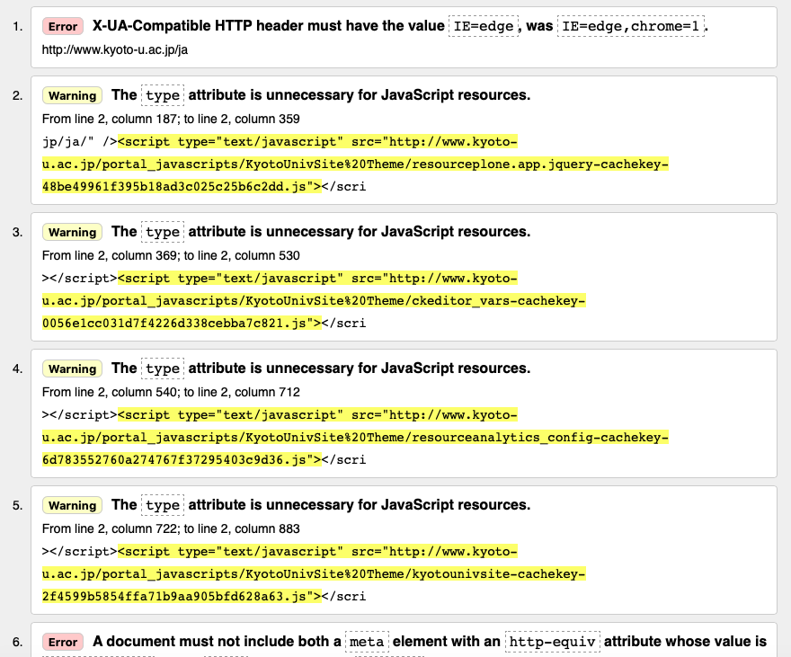

ホーム > 評価ツールの説明
アクセシビリティ・チェックツール
"The W3C Markup Validation Service"を用いることによって“ Web Content Accessibility Guidelines ”に基づいたXHTMLの仕様に合致していることを確認できる。
また、"CSS Validation Service"を用いることでCSSが仕様に合致していることを確認できる。

"Address"の欄に検証したい"URL"を貼り付けることによって、XHTMLまたはCSSの仕様に合致していない箇所の"Warning"や"Error"が検出される。
Copyright© 2019 g1853554 Kazuhito Tokita All Rights Reserved.